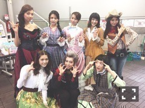

| 2015/10 13 Tue | パッション&ピクチ ャー。671回目 |

舞台『すべての犬は天国へ行く』
全18公演完走しました！
稽古期間、
アンサンブルの皆さんに
たくさん助けられて、
女優陣の皆さんからは
稽古期間、いつも
驚かされることばかり。
何もかもが刺激的で
一緒の舞台に立つのかと思うと
末恐ろしくて堪りませんでした。
私は何も知らない
ぺーぺーだと改めて痛感し、
その分たくさん学びました。
マリネ、クレメンタイン
酒場の義姉妹
クレメンタイン、
感情に素直なところが好きでした。
何を言うにも嘘と文句ばかり。
趣味が覗きという変態ぶり。
でも、見て見ぬ振りで
つくられた平和な世界、
住人がずっともやもやしながら
過ごしているこの村の掟を
自分の感情で壊しにいきました。
最期までとても純粋でした。
憎たらしさ全開で、
心から最低の変態で、
恋をすると誰よりも女の子。
クレメンタインになれる機会を
与えられて幸せでした。

我らが柿丸さん！
プリンシパルdeux以来、
役とは言えまさか柿丸さんに
罵声を浴びせる日が来るとは、、
裏ではたくさんアドバイスを
いだたきました。
乃木への愛を感じると同時に
安心感があります。
掛け合い、楽しかった！

犬組8人
少ない稽古期間、長期間の舞台。
支え合いつつも刺激を受け、
このメンバーとは絶妙な距離感でした
楽しい、話が尽きない人々。
どっぷりこの村の世界に
浸かれる環境を経験できてないから、
この先経験できる場所にいけるので
あれば行きたいと思いました。
今アイドルである以上は、
その範囲内での力のみ。
越えるも何も、
どうしようにも壁が高いです。
型にはまった状態ではいけない。
その先をいかないといけません、、
舞台って難しい。。

全員集合！
音さん、甚古さん、伊藤さん、猫背さん、鳥居さん、山田さん、東風さん、
榎本さん、谷松さん、柿丸さん、ニーコさん、山下さん、、
演出家の堤さんをはじめとする
制作スタッフの皆さん、メンバー
そして、観劇してくださった皆さん
本当にありがとうございました！！
まりか
コメント(507)
2015/10/13 21:54